Запрошуємо на виставу "Звіяні Голлівудом". 18 жовтня о 19.00. Палац ім. Гната Хоткевича
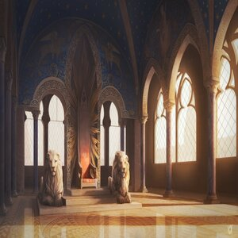Очікуйте новин щодо подальших вистав
Про нас
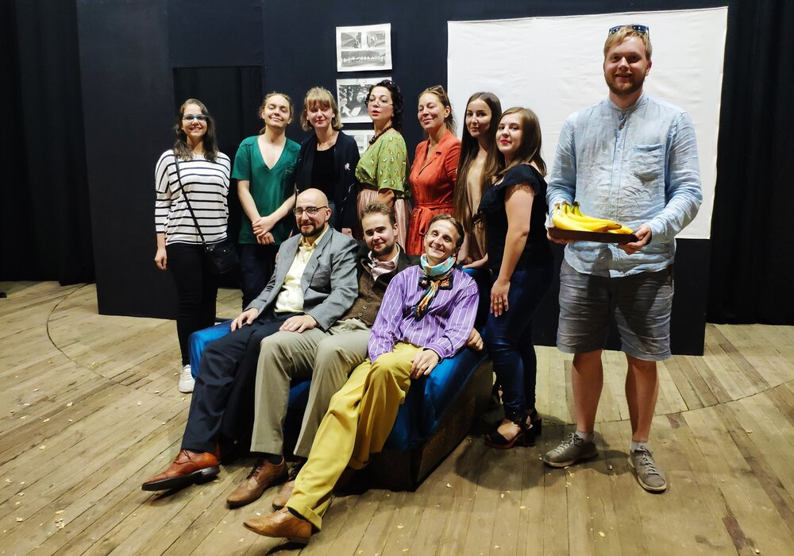Театр "Domus" заснувала кримчанка Наталія Меньшикова за допомогою багатьох людей, для яких розвиток мистецтва має велике значення. Перебуваючи у театрі, можна зануритися у чуже життя, а можна під іншим кутом побачити власне, заглянути в очі самому собі. Це й буде найголовніше диво театру, яке одні люди роблять для інших. Domus починав своє життя на Сихові і був там першим театром, але згодом переїхав у Палац Хоткевича у центрі. Відтепер у Львові буде не просто цікавий театр, це буде дім, в який зможе прийти кожен бажаючий!
Новини
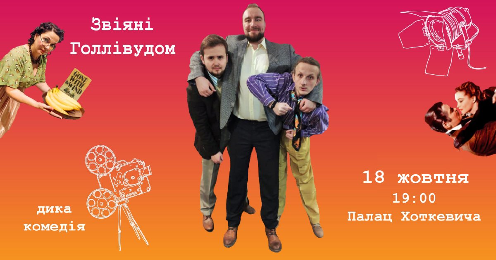Звіяні "Голлівудом"
Заперечення – Гнів – Торг – Депресія – Прийняття – Банани з арахісом – Всесвітній успіх. Це унікальна комедія. Три генії творять багатомільйонне диво за кілька днів. Історія народження культового фільму «Звіяні Вітром» у виконанні Театру Домус – прем’єра, яку ви маєте побачити! Це дуже смішно. Це смішно до сліз. Це підтверджений наукою випадок, коли мрії і наполегливості було достатньо, щоб заробити майже пів мільйона доларів.
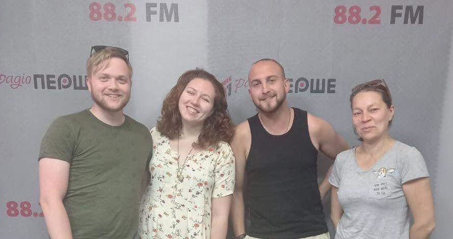Театр "Domus" завітав на Радіо "Перше"
Режисерка театру з акторами завітали на авторську програму Романа Гурського "#ШоууГури". Весела і надихаюча розмова дозволить вам почути декілька порад щодо акторства, особливо під час таких екстремальних часів як карантин. Про акторські будні, репетиції та подальші плани театру можна послухати вже зараз, клікнувши на вкладку-хмарку SoundCloud.
Актори
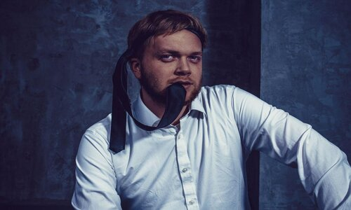 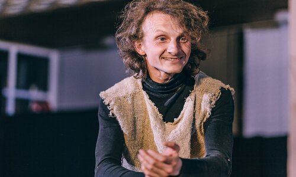 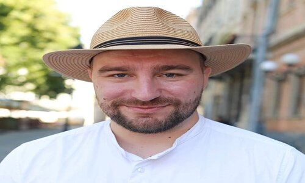
Дем'ян Лінник, Ліна Сівура, Олег Ярошенко, Олександр Меньшиков, Світла Ніколаєва, Михайло Петелицький, Тетяна Єрохіна, Олексій Меньшиков
Режисер
Наталя Меньшикова
Наталя Меньшикова народилася в Криму, театральним мистецтвом займається з юних літ. У Сімферополі вона працювала режисером, мала свій театральний центр. Чотири роки тому була змушена залишити Крим і переїхати до Львова. Тут знайшла однодумців і створила аматорсько-професійний театр «Domus», що в перекладі з латинської означає «дім». За чотири роки роботи в театрі було створено близько 20 вистав, в яких прийняло участь до 30 різних акторів. Ідея створення театру виникла з бажання поєднати переселенців та львів’ян, професіоналів та аматорів.
Вистави
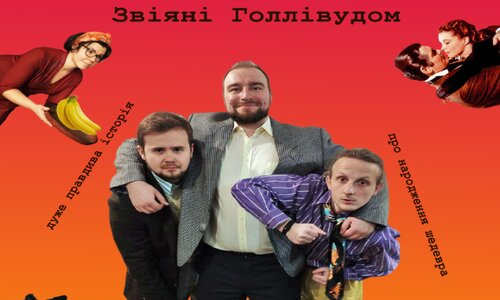Макбет
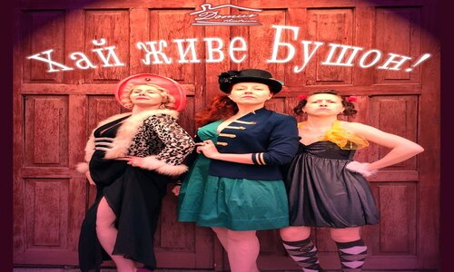Хай живе Бушон!
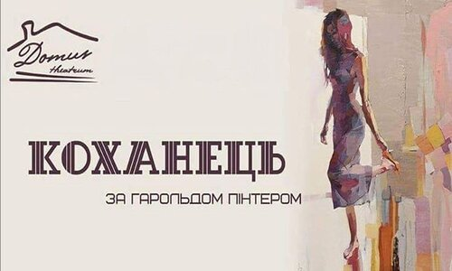Коханець
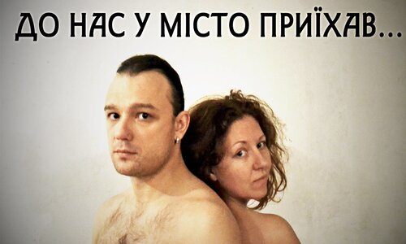До нас у місто приїхав!
Приєднатися
Надсилайте свої контакти
Контакти